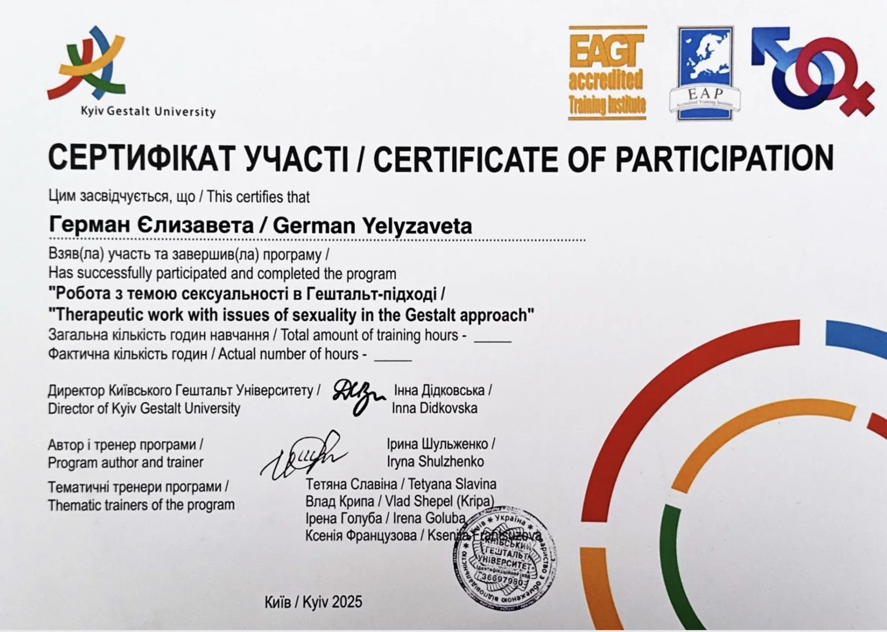
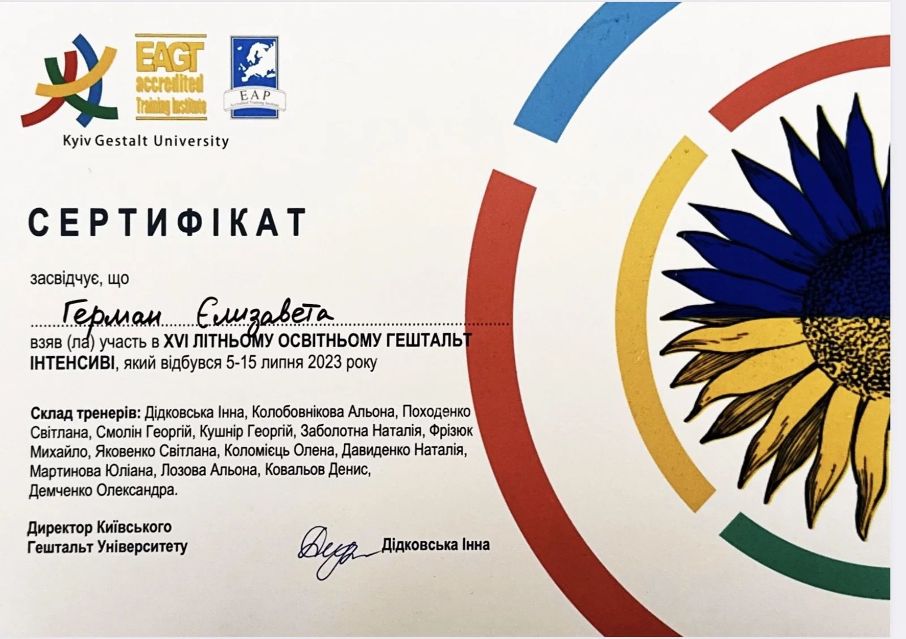
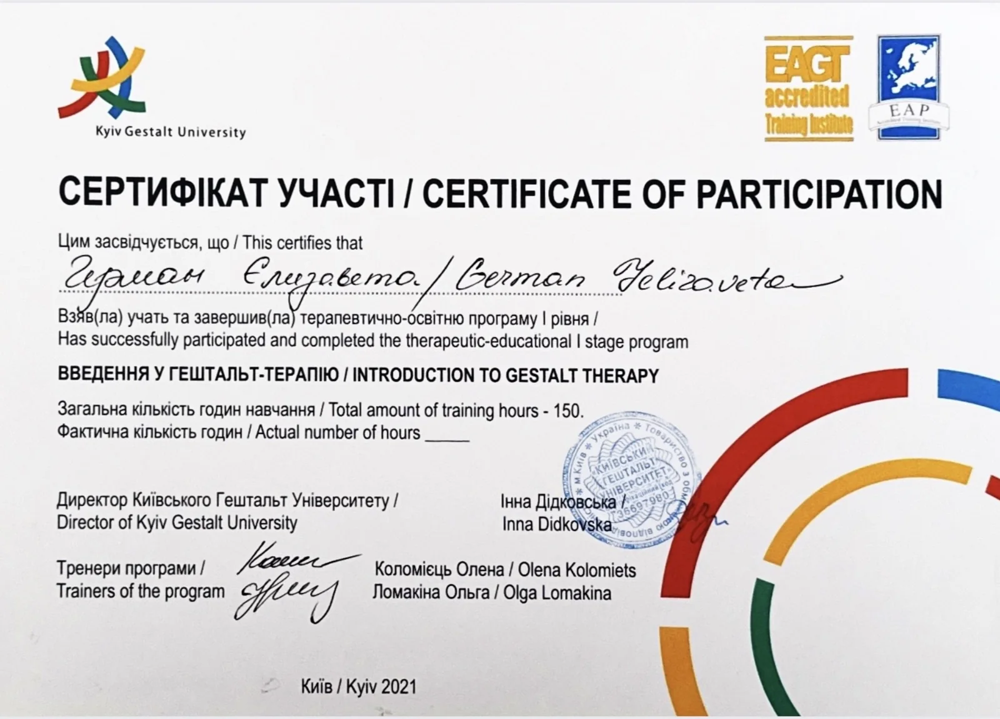
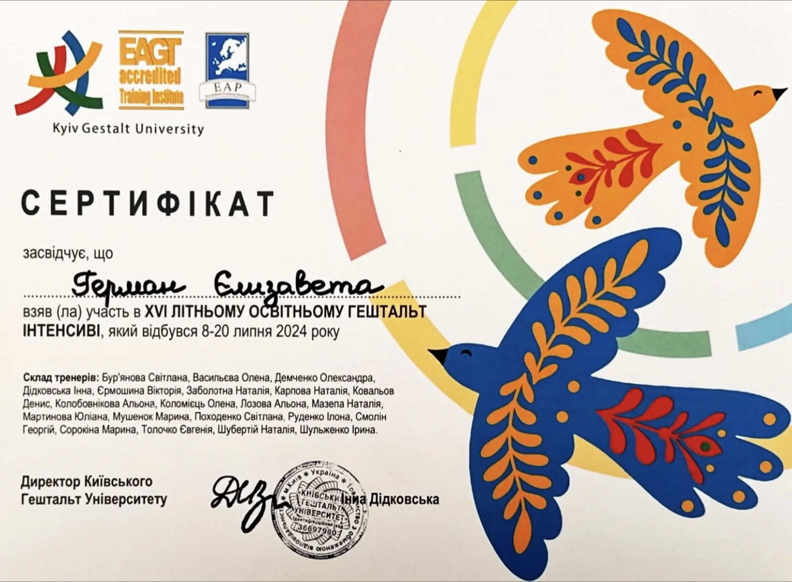
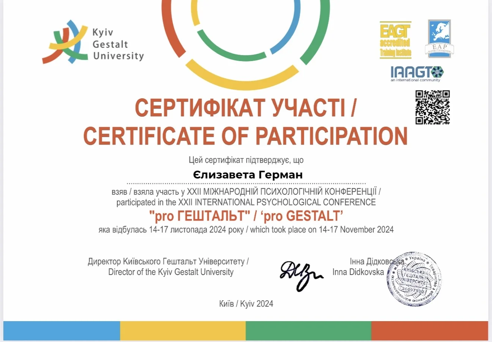
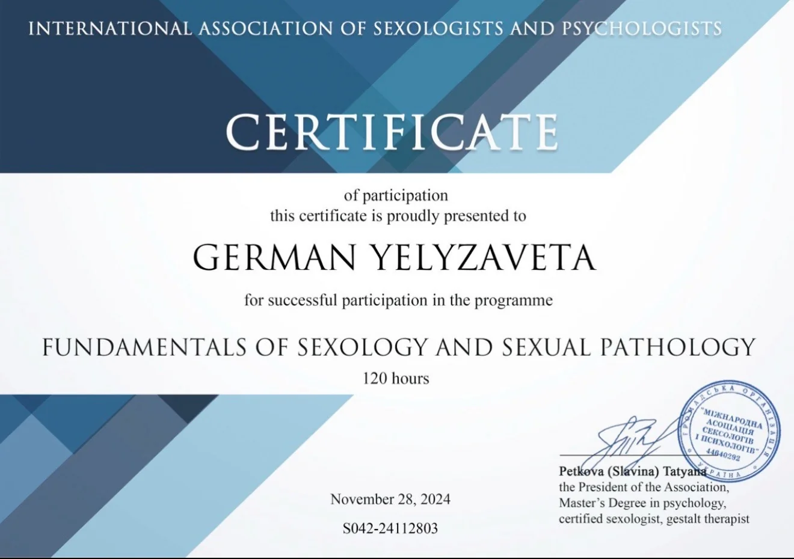
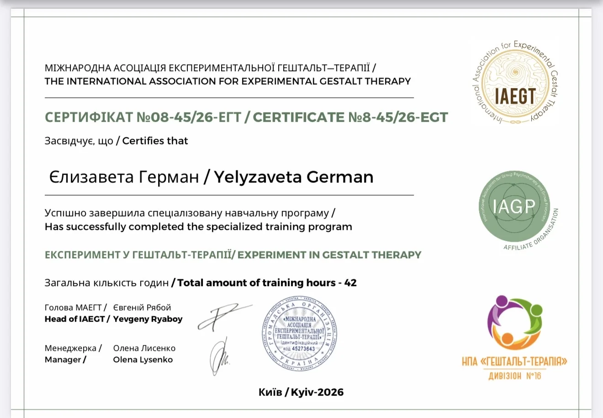
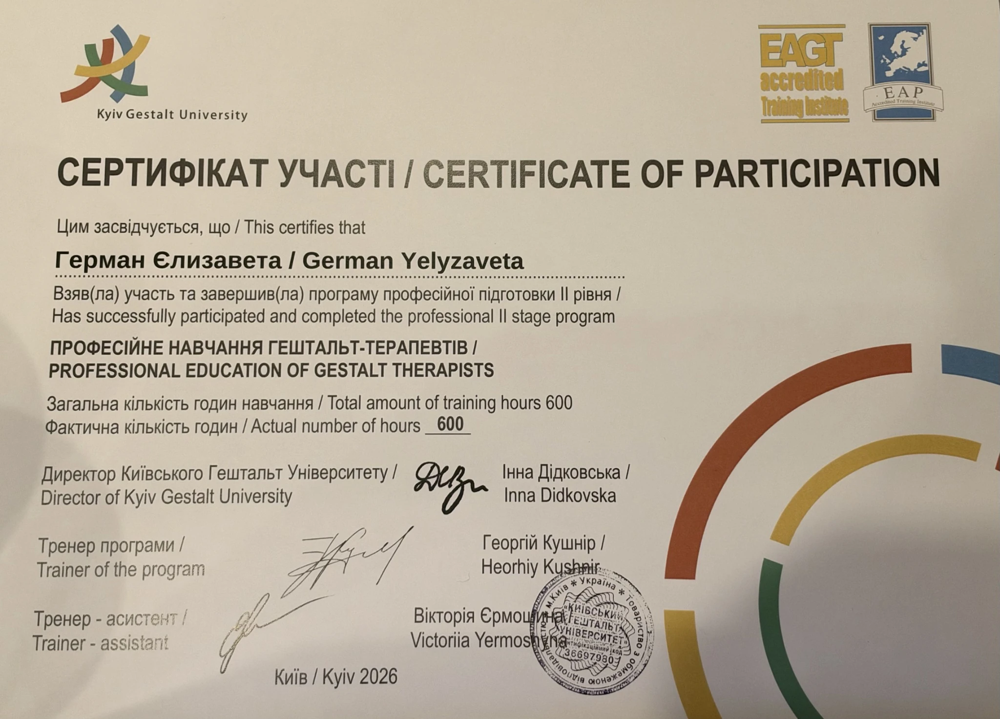

1 500 грн
50 хвилин
Індивідуальна зустріч
Онлайн або особисто в Києві
Психолог · Сексолог
Про контакт, щирість і безпечний простір, у якому можна бути собою.
Про мене
Я люблю свою роботу, людей та їхні історії. Мені цікаво, наскільки всі ми різні, як будуємо стосунки, переживаємо складні моменти, шукаємо себе та вчимося бути ближчими до власних бажань.
А поза терапією я просто Ліза. Люблю готувати (і смачно поїсти теж!), бігати, подорожувати, проводити час із близькими та сміятися від душі.
У роботі для мене важливі щирість, повага та чесність. Я не даю готових рецептів життя й не вирішую за вас, як правильно. Натомість ми разом досліджуємо ваші почуття, потреби та шукаємо те, що підходить саме вам.
Освіта та професійний розвиток
Маю диплом магістра з психології, додаткову освіту з клінічної психології та спеціалізацію з роботи із сексуальністю. Продовжую професійний розвиток і поглиблюю знання у гештальт-підході.








Індивідуальна терапія
Тут ви знайдете відповіді на основні питання про формат зустрічей, першу сесію та важливі домовленості. Якщо залишаться питання — напишіть мені, я завжди відкрита до діалогу.
1 500 грн
50 хвилин
Індивідуальна зустріч
Онлайн або особисто в Києві
Регулярність, формат і тривалість нашої роботи обговорюємо індивідуально, враховуючи ваш запит, потреби та можливості.
Контакт · Щирість · Прийняття
У терапії ми досліджуємо те, що вас турбує, знаходимо нові опори та способи справлятися зі складнощами, вчимося краще розуміти себе й будувати більш якісне життя.
Напруження, страхи, невизначеність.
Самокритика, сором, прийняття себе.
Близькість, конфлікти, власні потреби.
Бажання, інтимність, прийняття тіла.
Втома, виснаження, відпочинок.
Зміни, втрати, пошук опор.
Образ тіла, стосунки з їжею.
Злість, провина, внутрішні конфлікти.
Не обов’язково приходити в терапію з чітко сформульованою проблемою. Ми можемо разом дослідити те, що вас турбує, та зрозуміти, з чого почати.
ВАЖЛИВО ЗНАТИ
Відповіді на запитання, які можуть виникнути перед початком нашої роботи.
Я працюю індивідуально з дорослими від 18 років, онлайн та очно в Києві.
Наразі не працюю з дітьми, підлітками, парами та військовослужбовцями.
Також не працюю з активними хімічними залежностями як основним запитом.
Для мене важливо працювати в межах своєї компетентності, тому за потреби можу порекомендувати фахівця відповідного напрямку.
Так, я працюю з ЛГБТК+ клієнтами та запитами, пов’язаними із сексуальністю, ідентичністю, прийняттям себе та стосунками.
Для мене важливо, щоб кожна людина, незалежно від сексуальної орієнтації чи гендерної ідентичності, мала можливість отримати психологічну підтримку без страху осуду чи дискримінації.
У моєму кабінеті не потрібно пояснювати або виправдовувати те, ким ви є. Тут є місце для вас і вашої історії.
Перша зустріч — це можливість познайомитися, розповісти про те, що вас турбує, та поставити свої запитання.
Ми поговоримо про ваші очікування й можливий формат подальшої роботи.
Не обов’язково заздалегідь знати, з чого почати — можна прийти навіть із відчуттям, що щось не так, але поки незрозуміло що.
Конфіденційність — один із головних принципів моєї роботи.
Усе, чим ви ділитеся під час терапії, залишається конфіденційним. Я дотримуюся професійної етики та поважаю вашу приватність.
Під час супервізії (професійного обговорення роботи з колегами) випадки можуть розглядатися без розкриття особистості клієнта.
Можливі винятки, передбачені законодавством або пов’язані з питаннями безпеки, ми обговорюємо на початку співпраці.
На початку роботи ми узгоджуємо терапевтичний контракт — правила та домовленості щодо регулярності зустрічей, оплати, перенесення й скасування сесій, конфіденційності та відповідальності кожної сторони.
Це допомагає зробити нашу співпрацю прозорою, зрозумілою та створити безпечні умови для терапевтичного процесу.
Якщо ваші плани змінилися, прошу повідомити мене щонайменше за 24 години до запланованої зустрічі.
У разі пізнішого скасування сесія оплачується.
Усі організаційні домовленості ми обговорюємо на початку співпраці.